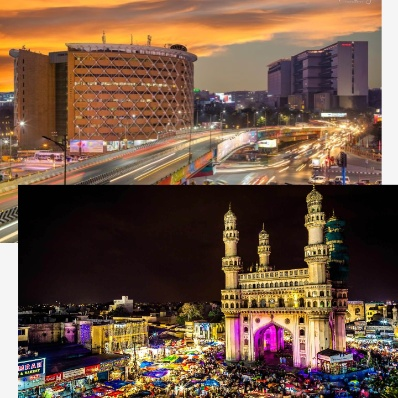

Welcome To
Hyderabad
The city of Pearls, Hi-Tech City, City of Nizams

Hyderabad is the capital of Telangana state and temporary capital of Andhra Pradesh state. The city, founded in the year 1591 by Mohammed Quli Qutub Shah, the fifth sultan of Qutb Shahi dynasty, offers a fascinating panorama of the past, with richly mixed cultural and historical tradition spanning over 400 years.
Nearest airport is the Rajiv Gandhi International Airport, Hyderabad. Being the headquarter of South Central Railway; Hyderabad is well connected with all major cities of India like Delhi, Mumbai, Chennai, etc....There are railway stations at Nampally and Kachiguda. Trains leaving from these two stations can also be boarded at Secunderabad railway station. Regular services of state roadways and privately owned buses from the bus stand of the city are available. Roads are well linked with important cities and states.

Hyderabad has an average altitude of about 1,778 feet (542 m) above mean sea Level (MSL), while the highest point in the city is Banjara Hills at 2,206 feet (672 m). The city houses multiple lakes and large water tanks. The lakes in the city are often referred to as sagar which means sea.
In 1589, Muhammad Quli Qutb Shah, the fifth ruler of the Qutb Shahi dynasty, selected the present site of the city and established the city of Hyderabad at the banks of the Musi river to overcome water shortages experienced at Golconda. The Purana Pul (old bridge) enabled quick travel between Golconda and Hyderabad.
The dynasty declared itself an independent monarchy during the final years of the British Raj. After the Partition of India, Hyderabad signed a standstill agreement with the new dominion of India, continuing all previous arrangements except for the stationing of Indian troops in the state.
Hyderabad Urban Development Authority has listed almost 160 buildings in Hyderabad in Telangana state as heritage structures. Almost 70% of heritage buildings are in private hands. Heritage structures include buildings, monuments, rock structures etc.
Chief minister A Revanth Reddy said the Congress government would launch a judicial probe into the previous BRS government's power purchase agreements with Chhattisgarh as well as the constriction of Bhadradri and Yadagiri thermal power plants.
3 days TOT program on CSA for GOVT teachers has started from 29th January, 2024 at the central crime station Basheerabagh, by the Bhrosa societ for protection women and children, working under the hyderabad city police

Applications are invited foro enrollment as Special Police Officer (150) Vacancies in HYderabad City Police.